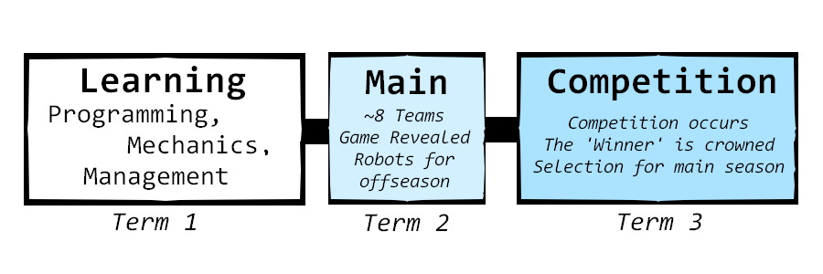

Brisbane Grammar School Robotics has been competing in FTC, First Tech Challenge, since its inaugral years in 2018. FTC is a yearly competition where
alliances of two teams must compete against eachother to score more points in tasks. In previous years, this looked like shooting balls called artifacts
to delivering rubber duckies. The purpose of offseason is large, but it is an opportunity to:
- Develop skills required for the selective main season
- Foster interest in Robotics and begin to understand the competition and Gracious Professionalism (whoo!)
- Have fun! (and win)
The Offseason Game
The offseason game is a custom, tailored 'game' that our robots compete in the offseason, created by Robotics Coordinator Mr. Ellis. They are meant to simulate real FTC games and structure. As such, there are multiple offseason teams that will build different robots and compete near the end of Term 3. After this, around ~16 people will be chosen to compete in the main season of FTC, in two teams (#19450 and #14579) You can see, below, a brief timeline of the main season, as well as a flowchart. Previous seasons are in the History page.

The rough idea of an offseason